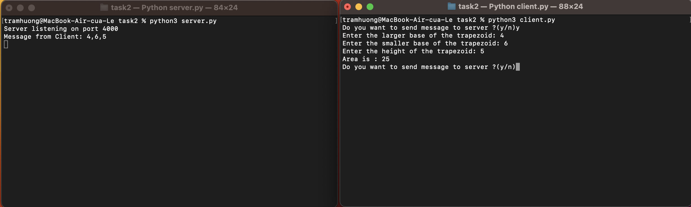

Задание 2
Реализовать клиентскую и серверную часть приложения. Клиент запрашивает у сервера выполнение математической операции, параметры, которые вводятся с клавиатуры. Сервер обрабатывает полученные данные и возвращает результат клиенту. Вариант “поиск площади трапеции”.
Выполнение
Реализация сервера
import socket
host = 'localhost'
port = 4000
def calc(a, b, h):
return (a + b) // 2 * h # Функция для вычисления площади трапеции
def main():
s = socket.socket(socket.AF_INET, socket.SOCK_STREAM) # Создание TCP-сокета
s.bind((host, port)) # Привязка сокета к хосту и порту
s.listen(1) # Прослушивание входящих подключений
print("Сервер слушает порт", port)
try:
while True:
client, _ = s.accept() # Принятие подключения от клиента
mess = client.recv(1024).decode("utf-8") # Получение сообщения от клиента
clientMsg = "Message from client: {}".format(mess)
a, b, h = map(int, mess.split(',')) # Разделение сообщения на отдельные значения
print(clientMsg)
area = calc(a, b, h) # Вычисление площади трапеции
client.send(str(area).encode("utf-8")) # Отправка ответа клиенту
except KeyboardInterrupt:
# Прерывание программы при получении сигнала Ctrl+C
pass
except Exception as e:
# Обработка других исключений
print("Произошла ошибка:", str(e))
finally:
s.close()
if __name__ == "__main__":
main()
Реализация клиента
import socket
host = 'localhost'
port = 4000
def main():
s = socket.socket(socket.AF_INET, socket.SOCK_STREAM) # Создание TCP-сокета
s.connect((host, port)) # Подключение к серверу
try:
while True:
user_input = input('Do you want to send a message to the server? (y/n)') # Запрос ввода от пользователя
user_input = user_input.lower()
if user_input == 'n':
break
a = input("Enter the larger base of the trapezoid: ")
b = input("Enter the smaller base of the trapezoid: ")
h = input("Enter the height of the trapezoid: ")
message = a + "," + b + "," + h # Формирование сообщения
s.send(message.encode("utf-8")) # Отправка сообщения серверу
reply_message = s.recv(1024).decode("utf-8") # Получение ответа от сервера
print(f"Area is: {reply_message}") # Вывод ответа сервера (вычисленная площадь)
except KeyboardInterrupt:
pass
except Exception as e:
# Обработка других исключений
print("An error occurred:", str(e))
finally:
s.close() # Закрытие сокета
if __name__ == "__main__":
main()
Пример работы
